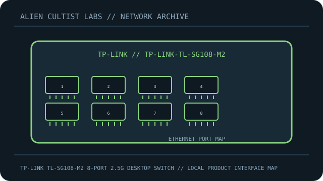

[ MODEL-SPECIFIC NETWORK HARDWARE ]
TP-Link TL-SG108-M2 8-Port 2.5G Desktop Switch
Eight 2.5GbE RJ-45 links in a fanless unmanaged metal desktop switch. This record is limited to the exact named model; revisions and regional SKUs may differ.

MODEL IDENTIFICATION: Match the complete model number and revision on the manufacturer label before applying specifications. Published link rates are nominal, not measured application throughput.
Published specifications and compatibility
| Exact product | TP-Link TL-SG108-M2 8-Port 2.5G Desktop Switch |
|---|---|
| Archive subcategory | Unmanaged switches |
| Physical ports | 8 × 2.5GBASE-T RJ-45; auto-negotiates with 1GbE/100MbE devices; no PoE or SFP ports. |
| Host / chassis interface | Standalone unmanaged Layer 2 switch; AC adapter supplies low-voltage DC. |
| Standards / protocol | IEEE 802.3bz (2.5GBASE-T), IEEE 802.3x flow control, auto MDI/MDIX. |
| Rated link and switching rates | 2.5 Gb/s per port; 40 Gb/s aggregate full-duplex switching capacity. Link and fabric ratings do not guarantee payload throughput. |
| Power and thermal notes | External DC adapter; fanless metal desktop housing. Match replacement supply to the product label. |
| Firmware / driver | Plug-and-play unmanaged operation; no host driver or web management. |
| Compatibility guidance | Cat5e or better copper and a multi-gigabit peer are needed to negotiate 2.5GbE. Older gigabit endpoints remain compatible at their negotiated rate; unmanaged means no configurable VLANs. |
Model-specific deployment notes
This model is the eight-port 2.5GbE TL-SG108-M2, not the similarly named Gigabit TL-SG108. Its capacity is 40Gbps across all ports at full duplex.
For a reproducible speed or interoperability test, record both link-partner models, cable/media, firmware, negotiated rate and test method. No benchmark is claimed in this archival record.
Manufacturer sources and documentation
- TP-LINK — official TP-Link TL-SG108-M2 8-Port 2.5G Desktop Switch product specificationsManufacturer product page/specification reference for this model.
- TP-LINK — official support, manual or compatibility resourcesUse revision- and region-specific documentation for firmware, installation, media and compatibility decisions.
Source specifications describe rated capability; verify the label and current manufacturer documentation before purchase or deployment.